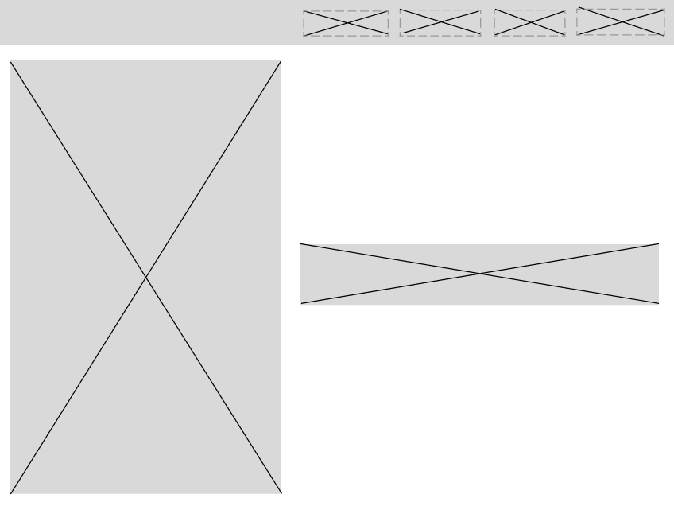
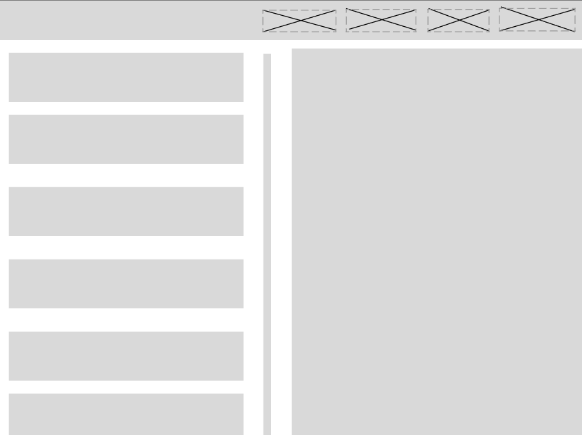
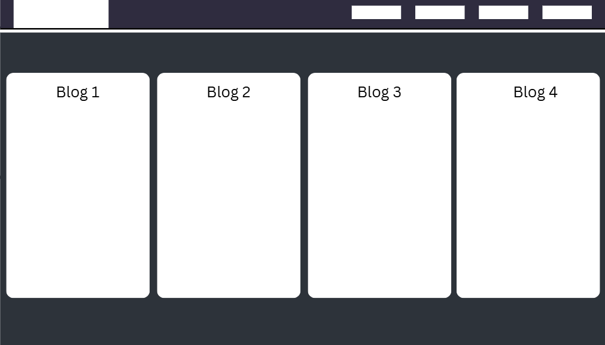

Design Section
Goal of Website
The goal of this website is to offer a comforting, peaceful experience for anyone who visits. Think of it as a resting place for weary travelers — a quiet corner of the internet where you can feel safe, slow down, and take a breath away from the noise of the outside world.
Wireframe
Iteration 1
|  |  |
Iteration 2
 |
 |
Iteration 3
 |
 |
Iteration 4
 |
IxD process
Goal alignment
The goal of this website is to offer a seamless and user-friendly experience. I want visitors to find information quickly and effortlessly, without the hassle of navigating through multiple pages. Everything you need is just a click away, making browsing smooth, intuitive, and frustration-free.
Information structure

User Flow

Interface elements
Key elements of my interface include a navigation bar and a burger icon that reveals a sidebar. This sidebar provides access to content specific to the page you're currently on. While buttons are part of the interface, they are often disguised—for example, blog cards function as clickable elements, and the navigation bar itself contains button-like links. The main navigation bar is used to move between the primary sections of the site, including the homepage, blog page, design page, portfolio, and essay page. The sidebar, accessed via the burger icon, appears on individual blog pages—such as Blog 1—and allows users to easily navigate between blog posts without needing to return to the main blog index.
Style process
Possible designs
Design 1
|
|
 |
Design 2
|
 |
Font
For this website, Im going with a font similar used in bloodborne, which is prominently used in the user interface of Bloodborne. I chose this font beacuse my website aesthethic is inspired by the aesthetic of Bloodborne’s Hunter’s Dream — a quiet, mysterious refuge for Hunters.
Colour Palette
My color palette will primarily consist of black, white, and various shades of blue. These colors were carefully chosen to reflect the visual atmosphere of Bloodborne’s Hunter’s Dream — a space dominated by cool, desaturated tones. The use of blue, in particular, evokes a sense of calm, melancholy, and mystery, while black and white provide contrast and clarity. Together, this palette creates a dreamlike, otherworldly mood thats found in the Hunters dream.
Style guide
Aesthetic goal
I want the aesthetic of my website to be calming and evoke an otherworldly feeling.
Colour Swatches
These are the primary colours used in my website, however for the blue colour i would make use of variations of it, such as different shades.
Font samples
For my font i went for something similar to the font used in bloodborne, which is Gelasio

Final Designs
|  |  |
Wireframes
Website on a phone screen

The last image on the right shows how the design section and blog pages are going to look like on a phone screen, and on blog pages, there will be a sub nav allowing users to access other blogs from the blog they are on. The sub nav unlike on a desktop wont be a sidebar pop up, rather it will be at the bootom of the page and there will no icon to trigger it.
References
 |
Homepage reference:I really like the simplicity of this homepage. The clean layout, intuitive navigation, and minimal distractions make it very user-friendly and visually appealing. |
 |
Blog page reference: The blog page here is very stylish, with a modern aesthetic, elegant typography, and thoughtful use of spacing and color that really elevates the user experience. |
 |
Profile page reference:The layout of this profile page is simple, yet effective — it presents information in a clear, structured way that makes it easy for readers to quickly absorb the key details |